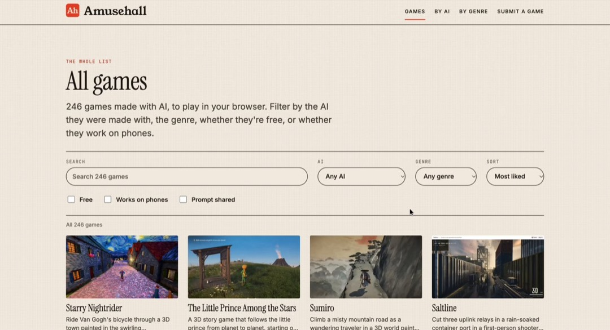
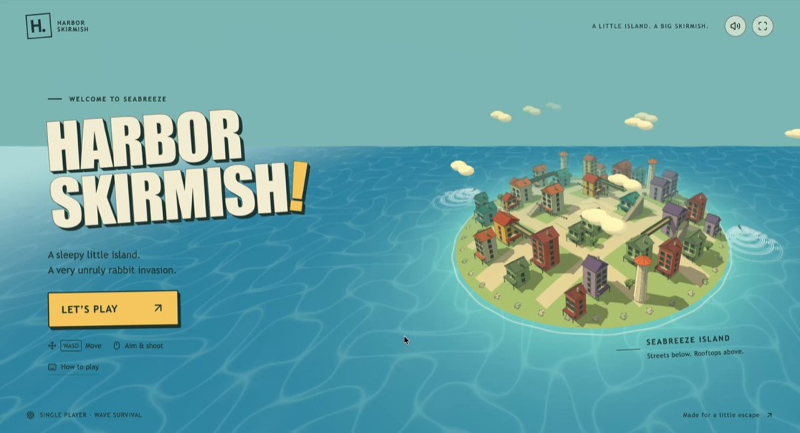
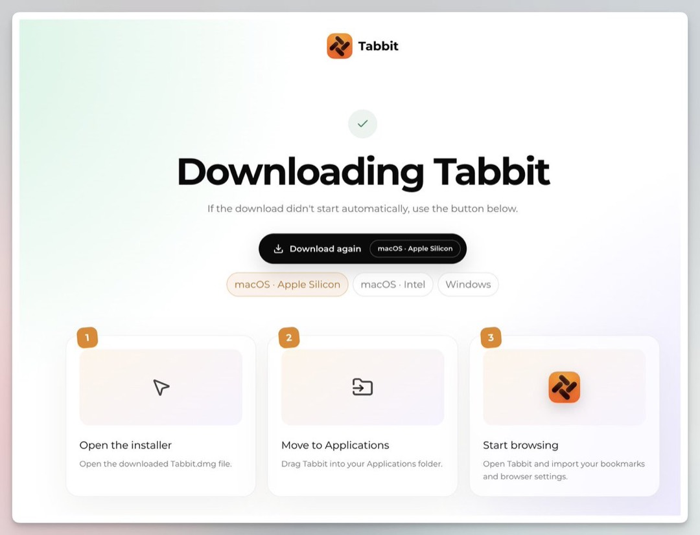
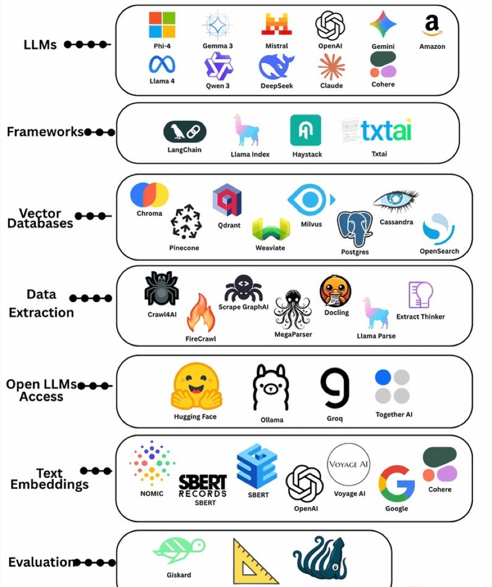
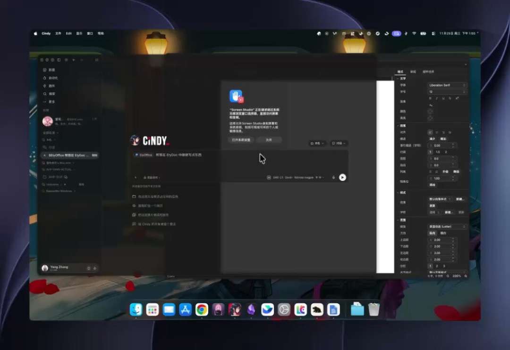

本期速览
01 Gemma 4 官方微调教程上线
02 OpenGame 开源游戏开发工具链
03 Agent 预加载记忆速度优于检索
07 RAG 准确性取决于数据链路
01｜Gemma 4 官方微调教程上线
来源（X） · @AISuperDomain · 2026-11-26 11:12
官方一次性发布了 17 篇技术指南和 40 多张原理示意图，覆盖大模型训练的完整流程，包括：
持续预训练（Continued Pre-training）
自定义对话模板（Chat Templates）
LoRA / QLoRA 参数高效微调
GRPO 强化学习
音频、票据识别及推理能力专项微调
此外，Google 还提供了 gemma-trainer Skill，让开发者借助 AI Agent 搭建自己的模型微调工作流。
对于想利用自己的数据训练垂直领域模型、研究强化学习或入门大模型微调的开发者来说，这是一套非常值得收藏的官方学习资料。
官方教程：https://gemma.ai/tuning/
GitHub：https://github.com/google-gemma/gemma-skills
02｜OpenGame 开源游戏开发工具链
来源（X） · @meow2149 · 2026-11-27 00:31
目前站里已经有 246 款作品，涵盖赛车、射击、开放世界、模拟经营、角色扮演等 18 种类型，直接在浏览器里就能玩。
里面不少作品的美术风格和创意都很不错，比如用 Claude Fable 5.2 做的梵高星空骑行、Claude Opus 5.5 做的水墨风山间冒险，还有用 GPT-6 Astra 做的各种 3D 游戏。
网站支持按模型和类型筛选，每款作品都有对应的作者和试玩入口，一部分还记录了提示词、开发工具和制作过程。
平时喜欢用 AI 折腾小游戏的朋友可以收藏一下，找找玩法和美术设计的灵感。

引用内容
meow @meow2149
OpenGame 不是新的 Agent，而是给 Codex、Claude Code、Gemini CLI 等 22 种 Coding Agent 配的游戏开发工具链，内置 12 个专用 MCP Tools、18 份开发指南和 25 款可二开的游戏模板，涵盖赛车、射击、跑酷、解谜等类型。
从写代码、设计场景，到调用多模态模型生成贴图、音乐和配音，都能交给 Agent 完成。写完还会自动跑逻辑校验、数值模拟和浏览器试玩，连封面图和宣传视频都能一起生成。
这算是一个很典型的垂直领域 Harness，底层还是熟悉的 Coding Agent，通过补齐专属工具、领域知识和验证机制，把能力延伸到了游戏开发场景。
项目采用 Apache-2.0 协议，支持本地部署，想用 Agent 折腾小游戏的朋友可以去试试。

03｜Agent 预加载记忆速度优于检索
来源（X） · @Mijuraaa · 2026-11-26 03:03
中文译文
代理应该预加载其记忆，还是用工具查找记忆？
我用 Claude Haiku 和 Mem0 跑了 300 次运行。两者的准确率相同。两者给出了相同的答案，但预加载更快。https://x.com/i/article/2125661376177741824
原文
Should an agent get its memory preloaded, or look it up with a tool?
I ran 300 runs with Claude Haiku and Mem0. Accuracy was the same for both. Both gave the same answers, but preloading was faster. https://x.com/i/article/2125661376177741824
04｜Tabbit AI 支持人机共用浏览器
来源（X） · @vista8 · 2026-11-26 17:49
支持完整导入 Chrome 的 Cookie 和插件、书签。
执行速度不错，Token 消耗低， 调用 CLI 操控浏览器时，不会被人的操作干扰，能实现了人机共用一个浏览器，非常方便。
① 一句话把公众号后台所有文章和发布数据导出。
② 帮我打开 Suno ，生成歌曲。
③ 一句话拿到 Github Trending 和 Producthunt 今日热门产品，写入飞书文档。
④ 自动填写新榜 AI 软件调研表单
软件除了支持 Mac M 和 Intel 芯片，还支持 Windows 和 Linux 操作系统，相当完善。
下面线程是案例演示，有点超预期。

05｜XPENG IRON 改用动态表情眼睛
来源（X） · @humanoidsdaily · 2026-11-26 00:00
中文译文
今天早些时候在广州参加了 XPENG AI Day 2026，其中面向量产的 IRON 人形机器人展示了一项值得注意的 UX 更新：用富有表现力、带动画的眼睛取代了早先抽象的面罩动画。
以下是主题演讲中的一瞥，展示它在 2027 年初零售门店部署前可以显示的不同表情：
原文
Attended XPENG AI Day 2026 in Guangzhou earlier today, where the production-intent IRON humanoid showed off a notable UX update: trading its earlier abstract visor animations for expressive, animated eyes.
Here’s a look from the keynote at the different expressions it can display ahead of retail store deployments in early 2027:
06｜Agent 三层架构替代单轮提示
来源（X） · @huxlab · 2026-11-26 15:18
一位 Anthropic 工程师刚把话撂这了：
“别再盯着一个聊天框敲 prompt 了，那纯属在浪费模型。我已经不写 prompt 了。”
现在他的 Agent 全都住在三层架构里：loop、graph 和 harness。
同样的模型，差不多的 token，交出来的成品直接翻了10倍。最离谱的是，他合上电脑下线了，这帮 Agent 还在继续干活。
说白了，他早就不是在“跟 AI 聊天”，而是在给 AI 搭一家能自己运转的小公司：
> loop 管个人：每个 Agent 自己规划、自己验收，不过关就重做，直到通过；
> graph 管分工：谁先干、谁并行、干完交给谁，排得明明白白；
> harness 管后勤：工具、沙盒、记忆、崩溃恢复，全给兜底。
整套跑通之后，这支团队能自己修自己的错，越跑越强。
最扎心的是他点破的那句：大多数人总怪模型不够聪明，其实根本不是模型不行，是你套在模型外面那一层Harness没搭好。
我的看法是，绝大部分人用 AI，骨子里还是“聊天思维”：把最顶级的模型关在一个对话框里，你敲一句，它吐一句，你一停手，它就原地发呆。
真正拉开差距的，早就不是谁的提示词写得更巧妙，而是谁先把“人肉盯着问”换成了“搭环境让它自己跑”。
反过来想，等下一代模型出来，最慌的可能不是还没用上 AI 的人，而是那些每天在对话框里调 prompt 调得最起劲、还以为自己走在时代最前面的人。
07｜RAG 准确性取决于数据链路
来源（X） · @UPing123zzz · 2026-11-26 18:23
这篇 RAG 技术栈指南值得收藏，作者把整个系统拆分成了大模型、RAG 框架、向量数据库、数据解析、模型托管、Embedding 和系统评测七个模块。
但很多初学者容易陷入技术选型的误区。
还没有处理过几份真实文档，就开始研究 Qdrant 和 Pinecone 哪个更好，LangChain 和 LlamaIndex 应该选哪个，Embedding 模型的 Benchmark 谁排名更高。
花了几个星期研究工具，最后还是不知道自己的 RAG 系统为什么会回答错误。
一个典型的 RAG 系统，其实可以拆成两条链路。
离线索引链路负责数据获取、文档解析、清洗、切片、向量化和索引建立；在线查询链路负责理解用户问题、检索相关证据、重排序、组装上下文，再交给大模型生成答案。
理解这两条链路之后，很多工程问题就会变得清晰。
比如一家企业的采购制度中，不同金额的采购订单对应不同的审批流程。如果 PDF 解析阶段破坏了表格结构，导致采购金额和审批条件之间的对应关系丢失，那么后面换再强的 Embedding 模型、向量数据库和 LLM，都未必能够恢复这些信息。
再比如用户询问最新的报销标准，但知识库中同时存在2025年和2026年的制度文件。
两份文档在语义上可能都非常相关。如果没有时间过滤、版本管理和有效的重排序机制，大模型甚至可以非常忠实地引用原始文档，却给出一个完全错误的业务答案。
所以 RAG 系统的准确性，并不是一个单纯的模型能力问题，而是整条数据链路共同作用的结果。
当系统出现错误时，我认为最值得培养的是分层故障定位能力。
正确的信息是否存在于原始数据中？解析之后是否被完整保留？切片有没有破坏语义？检索阶段是否召回了正确证据？重排序有没有错误地淘汰关键文档？最终传递给模型的上下文是否完整？
只有确定问题发生在哪一层，才能知道应该优化什么。
而不是每次遇到错误，就不断修改 Prompt、更换模型、增加检索数量，最后整个系统越来越复杂，却没有真正解决问题。
这里面还有一个值得注意的概念：语义相似不等于业务相关。
比如“支持退款”和“不支持退款”，在向量空间中可能具有较高的相似度，但两者的业务含义完全相反。
这也是为什么企业级 RAG 往往需要结合 BM25、向量检索、元数据过滤和 Reranker，而不是单纯依赖 Embedding。
对于结构化业务数据，直接使用 SQL 查询可能比向量检索更准确；对于关系密集型知识，可以考虑 GraphRAG；对于需要不断补充证据、动态切换信息源的研究任务，Agentic RAG 才可能体现出优势。
这些技术都不是必须使用的标准配置，而是针对不同问题的解决方案。
我自己在学习 AI 工程、做 GEO 项目和自动化工作流的过程中，也越来越重视评测这件事。
没有固定的测试集，你根本不知道今天更换一个 Embedding 模型，明天修改 Chunk Size，后天增加一个 Reranker，究竟是在优化系统，还是单纯增加了系统复杂度。
比较合理的方式，是先准备几十道具有明确参考答案和证据来源的问题，建立最基础的 RAG 评测基线，再逐步改变单个主要变量，比较 Recall@K、答案准确性、证据忠实度、响应延迟和实际调用成本。
有时候你可能会发现，优化原始数据质量所带来的收益，比更换一个更强的大模型还要明显。
尤其是现在借助 Codex、Claude Code，搭建一个完整的 RAG Demo 已经不是特别困难的事情。
但一个人能够让 AI 写出 RAG 系统，和一个人能够独立诊断、评估和优化 RAG 系统，还是存在很大的区别。
对于想往 AI Engineer、FDE 方向发展的人，我觉得真正值得投入时间的，是从头到尾做一次真实的 RAG 项目，把遇到的每一个问题、每一次技术决策、每一次评测结果都记录下来。
先证明最简单的方案能够解决什么问题，再通过数据证明为什么需要引入更复杂的方案。
不要把技术栈的丰富程度当成工程能力，也不要把一个能够运行的 Demo 当成已经完成的业务交付。
框架只是实现手段。真正的 RAG 工程能力，是知道系统为什么能够找到正确的答案，也知道它找不到正确答案的时候，应该去哪里解决问题。
引用内容
Brij Pandey @LearnWithBrij
中文译文
正在构建你的第一个 RAG 应用？
不要像我差点做的那样，把 3 周浪费在选择工具上。
你只需要理解这 7 层就可以开始。👇
1. LLMs（大脑）
生成答案并理解上下文。
常见选择：
→ GPT
→ Claude
→ Gemini
→ Llama
→ DeepSeek
→ Qwen
先用：GPT 或 Gemini。
2. RAG Frameworks（引擎）
将你的 LLM 连接到外部知识。
常见选择：
→ LangChain
→ LlamaIndex
→ Haystack
先用：LlamaIndex，适用于以 RAG 为重点的项目。
3. Vector Databases（记忆）
存储嵌入并检索相关信息。
常见选择：
→ Chroma
→ Pinecone
→ Qdrant
→ Weaviate
→ Milvus
→ pgvector
先用：Chroma，适用于本地项目。
4. Data Extraction（收集器）
将 PDF、网站和文档转换为可用数据。
常见选择：
→ Firecrawl
→ Crawl4AI
→ Docling
→ LlamaParse
先用：文档用 Docling，网站用 Firecrawl。
5. Model Hosting（基础设施）
运行开源模型，而无需从头构建所有内容。
常见选择：
→ Ollama
→ Hugging Face
→ Groq
→ Together AI
先用：Ollama，用于本地实验。
6. Embedding Models（翻译器）
将文本转换为向量，以便你的应用能够找到相关信息。
常见选择：
→ OpenAI Embeddings
→ Voyage AI
→ Cohere
→ Sentence Transformers
→ Nomic
先用：OpenAI Embeddings 或 Sentence Transformers。
7. Evaluation（质量检查）
衡量你的 RAG 系统是否真正检索到正确信息并生成可靠的答案。
常见选择：
→ RAGAS
→ DeepEval
→ Giskard
先用：RAGAS。
以下是我会为你的第一个 RAG 项目推荐的技术栈：
LLM → OpenAI
Framework → LlamaIndex
Vector DB → Chroma
Data Extraction → Docling
Model Hosting → Ollama
Embeddings → OpenAI
Evaluation → RAGAS
一件重要的事：
你不需要在构建之前掌握所有 7 层。
先构建一个小型 RAG 应用。理解数据如何从文档流向检索，再流向最终答案。
然后随着项目增长升级各个组件。
保存这份路线图。你以后会感谢自己的。
你想先探索哪一层？
原文
Building your first RAG application?
Don't waste 3 weeks choosing tools like I almost did.
You only need to understand these 7 layers to get started. 👇
1. LLMs (The Brain)
Generate answers and understand context.
Popular choices:
→ GPT
→ Claude
→ Gemini
→ Llama
→ DeepSeek
→ Qwen
Start with: GPT or Gemini.
2. RAG Frameworks (The Engine)
Connect your LLM to external knowledge.
Popular choices:
→ LangChain
→ LlamaIndex
→ Haystack
Start with: LlamaIndex for RAG-focused projects.
3. Vector Databases (The Memory)
Store embeddings and retrieve relevant information.
Popular choices:
→ Chroma
→ Pinecone
→ Qdrant
→ Weaviate
→ Milvus
→ pgvector
Start with: Chroma for local projects.
4. Data Extraction (The Collector)
Turn PDFs, websites and documents into usable data.
Popular choices:
→ Firecrawl
→ Crawl4AI
→ Docling
→ LlamaParse
Start with: Docling for documents, Firecrawl for websites.
5. Model Hosting (The Infrastructure)
Run open-source models without building everything from scratch.
Popular choices:
→ Ollama
→ Hugging Face
→ Groq
→ Together AI
Start with: Ollama for local experimentation.
6. Embedding Models (The Translator)
Convert text into vectors so your app can find relevant information.
Popular choices:
→ OpenAI Embeddings
→ Voyage AI
→ Cohere
→ Sentence Transformers
→ Nomic
Start with: OpenAI Embeddings or Sentence Transformers.
7. Evaluation (The Quality Check)
Measure whether your RAG system actually retrieves the right information and generates reliable answers.
Popular choices:
→ RAGAS
→ DeepEval
→ Giskard
Start with: RAGAS.
Here's the stack I'd recommend for your first RAG project:
LLM → OpenAI
Framework → LlamaIndex
Vector DB → Chroma
Data Extraction → Docling
Model Hosting → Ollama
Embeddings → OpenAI
Evaluation → RAGAS
One important thing:
You don't need to master all 7 layers before building.
Build a small RAG app first. Understand how data flows from documents to retrieval to the final answer.
Then upgrade individual components as your project grows.
Save this roadmap. You'll thank yourself later.
Which layer would you like to explore first?

08｜ELY Office 插件支持协同编辑
来源（X） · @ZacharyZhang · 2026-11-26 02:59
